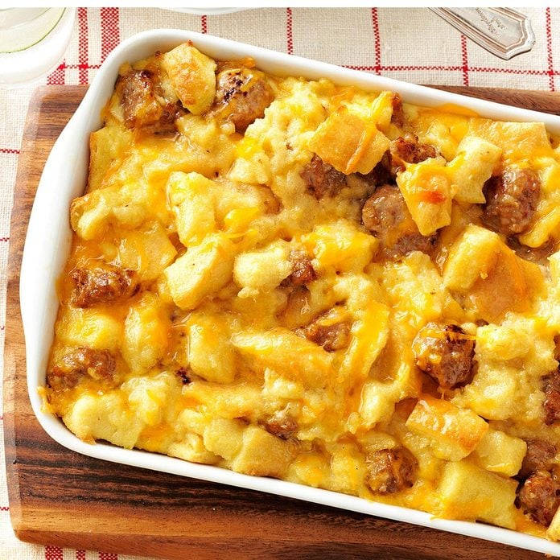

Sausage and Egg Cassarole

Description
A delicious sausage and egg casserole
Ingredients
- 1 pound bulk pork sausage
- 6 large eggs
- 2 cups 2% milk
- 1 teaspoon salt
- 1 teaspoon ground mustard
- 6 slices white bread, cut into 1/2-inch cubes
- 1 cup shredded cheddar cheese
Steps
- In a skillet, brown and crumble sausage; drain and set aside. In a large bowl, beat eggs; add milk, salt and
mustard. Stir in bread cubes, cheese and sausage.
- Pour into a greased 11x7-in. baking dish. Cover and refrigerate for 8 hours or overnight. Remove from the
refrigerator 30 minutes before baking. Bake, uncovered, at 350° for 40 minutes or until a knife inserted in
center comes out clean.
Return to the main page